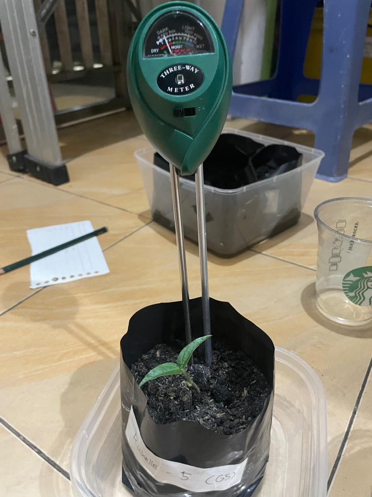

-Our soil pH ranges from 7-7.5.
- The pH of the soil actually affects nutrient absorption by influencing the solubility and availability of nutrients in the soil.
-Different nutrients are most available at different pH levels. For example, some nutrients are more soluble and readily absorbed by plants in acidic conditions, while others are more available in alkaline conditions. When the pH is outside the optimal range for a particular nutrient, it can become less soluble, and plants may not be able to absorb it effectively, leading to nutrient deficiencies.
-Mung beans grow best in well-draining sandy loam soil with a pH level between 6.2 and 7.2. While they prefer slightly acidic to neutral conditions, they can tolerate a range, but performance drops in strongly acidic (below 5) or highly alkaline (above 8-9) soils, which can restrict growth.